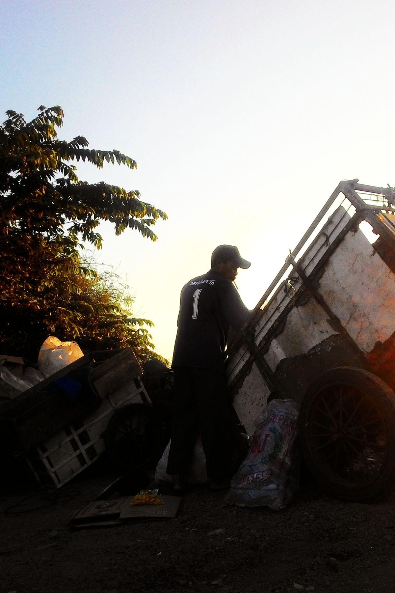
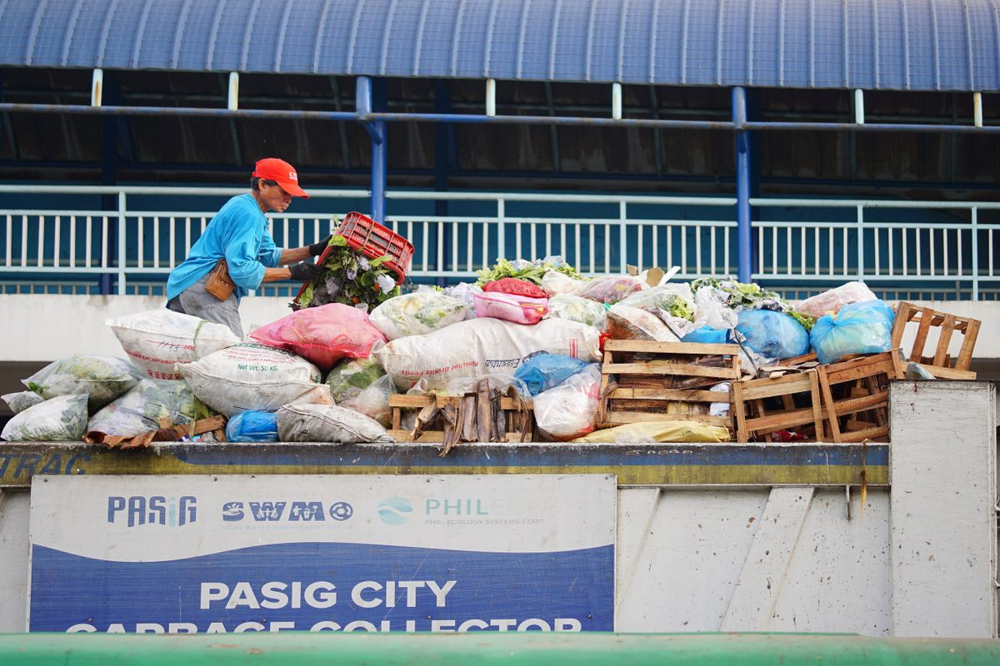

Kabar baik buat kamu yang lagi cari kerja di Jakarta. Dinas Lingkungan Hidup (DLH) DKI Jakarta membuka 264 lowongan lewat program padat karya penanganan sampah untuk periode November sampai Desember 2026. Upahnya Rp174.748 per hari, dan pendaftar tidak wajib punya ijazah. Syarat utamanya cuma satu: kamu harus ber-KTP DKI Jakarta.
Tapi ada satu hal yang bikin kamu harus gerak cepat. Pendaftarannya cuma dibuka tiga hari, dari 23 sampai 25 Oktober 2026. Artinya hari ini, Sabtu 24 Oktober, adalah hari kedua, dan besok pendaftarannya sudah tutup. Artikel ini merangkum posisi yang dibuka, syarat dan upahnya, cara daftar online-nya, sampai jadwal seleksinya. Semua mengikuti informasi resmi DLH DKI Jakarta dan laman jakarta.go.id per Oktober 2026.

Ada lowongan apa saja
Total ada 264 posisi yang terbagi jadi tiga jenis pekerjaan. Pertama, 139 orang petugas pemilah sampah organik dan anorganik. Tugasnya memisahkan sampah dari titik pengumpulan ke tempat penampungan sementara (TPS), menyiapkan bahan untuk mesin pembubur, membuat lubang biopori, dan membantu proses pengomposan. Kedua, 25 orang tenaga pendukung atau helper Refuse-Derived Fuel (RDF) Plant yang membantu mengolah sampah menjadi bahan bakar alternatif. Ketiga, 100 orang petugas pengangkat sampah yang memuat sampah ke kendaraan pengangkut dan memastikan tidak ada sampah yang tercecer selama perjalanan.
Penempatannya mencakup lima wilayah kota administrasi Jakarta plus Kabupaten Administrasi Kepulauan Seribu. DLH menyatakan akan mempertimbangkan domisili peserta saat menentukan lokasi penugasannya, jadi kamu kemungkinan besar ditempatkan tidak jauh dari tempat tinggalmu. Kepala DLH DKI Jakarta, Dudi Gardesi, menyebut program ini memberi manfaat ekonomi bagi warga sekaligus memperkuat penanganan sampah di ibu kota.

Syaratnya apa, upahnya berapa
Ini bagian yang bikin lowongan ini istimewa: syaratnya ringan. Program ini terbuka untuk laki-laki maupun perempuan yang punya KTP DKI Jakarta. Kamu tidak diwajibkan punya ijazah atau kualifikasi pendidikan formal tertentu. DLH memberi prioritas kepada warga yang masuk kelompok desil 1 sampai 5, yaitu kelompok yang diprioritaskan berdasarkan tingkat kesejahteraan, supaya kesempatan ini menjangkau masyarakat yang paling membutuhkan.
Peserta yang lolos akan bekerja selama dua bulan, November sampai Desember 2026, dengan jadwal 20 hari kerja setiap bulannya. Upahnya Rp174.748 per hari. Kalau kamu masuk penuh 20 hari dalam sebulan, hitungannya sekitar Rp3,49 juta per bulan, atau sekitar Rp6,99 juta untuk dua bulan penuh. Menurut tabel resmi di laman jakarta.go.id, masa kerjanya tercatat mulai 2 November sampai 31 Desember 2026.
Cara daftar online langkah demi langkah
Seluruh pendaftaran dilakukan secara online lewat laman resmi Pemprov DKI Jakarta. Ikuti langkah-langkah ini:
- Buka https://www.jakarta.go.id/padat-karya dari HP atau laptop. Ini satu-satunya jalur resmi pendaftaran, sesuai yang diumumkan DLH.
- Cari baris lowongan Dinas Lingkungan Hidup (DLH) dengan jenis pekerjaan yang kamu mau: pemilah sampah, helper RDF Plant, atau pengangkat sampah. Klik kolom pendaftaran di baris tersebut.
- Isi data diri sesuai KTP. Pastikan nama, NIK, dan alamat sama persis dengan yang tertulis di KTP-mu, jangan dikira-kira.
- Unggah foto KTP yang jelas dan tidak terpotong. Foto yang buram atau terpotong bisa bikin verifikasimu gagal.
- Periksa lagi semua isianmu, lalu kirim. Simpan atau screenshot bukti pendaftaranmu sebagai arsip.
Satu peringatan penting: pendaftaran program resmi ini tidak memungut biaya apa pun. Kalau ada akun atau oknum yang mengatasnamakan DLH lalu meminta uang pendaftaran atau transfer, itu sudah pasti penipuan. Laporkan dan jangan dilayani.

Jadwal seleksi setelah mendaftar
Setelah pendaftaran ditutup pada 25 Oktober, prosesnya berlanjut dengan jadwal yang sudah diumumkan DLH. Tanggal 26 sampai 27 Oktober 2026 adalah masa pemanggilan dan verifikasi calon peserta. Tanggal 28 Oktober dilakukan evaluasi hasil verifikasi. Pengumuman peserta yang diterima dijadwalkan pada 29 Oktober 2026. Peserta yang lolos kemudian menandatangani kontrak pada 30 Oktober 2026, sehari sebelum mulai bekerja.
Jadi setelah kamu mendaftar, tugasmu tinggal satu: pantau terus pengumuman di laman jakarta.go.id atau kanal resmi DLH DKI Jakarta sampai tanggal 29 Oktober. Jangan sampai namamu lolos tapi kamu tidak tahu.
Tips biar peluangmu lebih besar
Karena jendela pendaftarannya cuma tiga hari, jangan menunda sampai menit-menit terakhir. Situs pendaftaran bisa padat di jam-jam akhir dan kamu tidak mau gagal kirim gara-gara kehabisan waktu. Siapkan dulu foto KTP yang jelas sebelum membuka formulir, supaya prosesnya sekali jalan. Isi data dengan teliti, karena kesalahan ketik pada NIK atau nama bisa bermasalah di tahap verifikasi. Dan kalau kamu termasuk kelompok desil 1 sampai 5, manfaatkan prioritas itu dengan mendaftar secepatnya.
Intinya
DLH DKI Jakarta membuka 264 lowongan padat karya penanganan sampah untuk November sampai Desember 2026, dengan upah Rp174.748 per hari dan syarat yang ringan: cukup KTP DKI, tanpa ijazah. Pendaftarannya online lewat jakarta.go.id/padat-karya dan tutup besok, 25 Oktober 2026. Seleksi berjalan 26 sampai 28 Oktober, pengumuman 29 Oktober, dan tanda tangan kontrak 30 Oktober. Kalau kamu atau ada kerabatmu yang butuh penghasilan akhir tahun ini, jangan lewatkan hari terakhir besok. Semua informasi di artikel ini mengikuti keterangan resmi DLH DKI Jakarta per Oktober 2026.
← Kembali ke Other